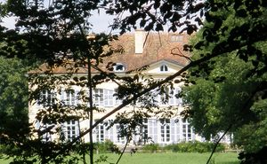
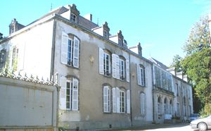
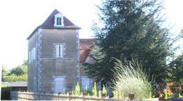
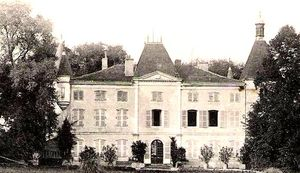
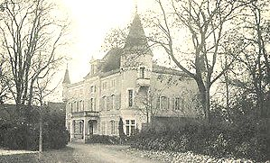
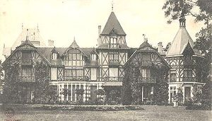
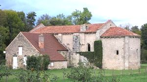

Recensement Jean-Claude Truffet
| Département | 03 — Allier |
| Canton | Escurolles |
| Commune | Brout-Vernet |
| Type d'édifice | Château |
| Période d'origine | XV-XIX |







MOTTE le château actuel est une ancienne maison forte du XVe siècle, remaniée au XIXe siècle pas d'information historique. POINTET agrandi et restauré à la fin du XIXe siècle, pas d'information historique. VERGER, le château actuel a été élevé au XVIIIe siècle, pas d'information historique. VERNET,dès le XIIIe siècle, les seigneurs du Vernet ont pris le nom du fief comme patronyme et, en 1233, Odin du Vernet reconnaît tenir en fief du sire de Bourbon, Archambaud III, la maison de Vecenat, en augmentation de son premier fief. En 1288, Dalmas du Vernet reçoit une indemnité pour dépense faite dans son hôtel. La famille de Rollat devint plus tard propriétaire et seigneur du Vernet, il existe donc au Vernet dès le XIIIe siècle un château aujourd'hui disparu. Il est toutefois possible de distinguer, ceinturée par les voies d'accès. Le château Vernet actuel, la présence d'une ancienne motte artificielle, élevé vers 1830, conserve l'ordonnance classique du XVIIIe siècle. Il se compose d'un grand bâtiment rectangulaire à 3 niveaux, formant un corps central légèrement en retrait et de deux avant-corps sur les ailes, en forme de pavillons engagés.
Motte, le corps principal de bâtiment du XVe siècle de plan barlong, à deux niveaux, était flanqué de deux tours rondes crénelées aux angles sud et est. Elles sont aujourd'hui recouvertes de toits coniques. Le premier étage de l'une d'elles a été transformé en pigeonnier. Le XIXe siècle a été complètement reconstruit, vers 1325, la façade ouest, par l'ajout d'un avant-corps central, en forme de tour carrée, prise en uvre. Il abrite la porte d'entrée couverte d'un arc en plein cintre. Le toit en pavillon de cette tourelle est orné d'une lucarne au fronton néo-renaissance. La façade en retrait s'éclaire, sur les 2 niveaux, de fenêtres à arcs surbaissés, alors que les lucarnes et cheminées agrémentent le toit. L'ensemble est anglé d'une haute tour ronde, à chaînages intermédiaires, couverte d'un toit conique, et d'une échauguette ronde, reposant au niveau du second étage sur un culot mouluré.
Pointet, est entouré d'un parc superbe. La construction étonne par sa grande façade de brique, en forme de corps central, et ses deux pavillons pris en oeuvre, flanqués de deux tourelles; l'une en pendentif, l'autre hexagonale, à l'angle est, qui s'élève au dessus de l'ensemble avec son toit élancé surmonté d'un clocheton ajouré, l'architecte a animé la façade par des colombages, et donné une note originale à cette construction qui a rompu avec le style Napoléon III. Verger, le château actuel a été élevé au XVIIIe siècle, sur l'emplacement d'une ancienne motte féodale et a remplacé une construction primitive, peut être au lieu proche du château-fort. Le corps principal du bâtiment, de plan rectangulaire, est élancé avec ses trois niveaux et son toit en pavillon. Sur sa face ouest, une petite tour carrée est accolée en retrait alors que sur la face est, un long bâtiment à deux niveaux, couvert d'un toit en pavillon, déséquilibre un peu l'ensemble, qui a été agrandi et restauré vers 1875.
Famille de Rollat "
Château de la Motte, du Pointet, du Verger et de Vernet à Brout-Vernet